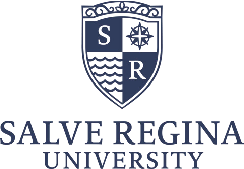
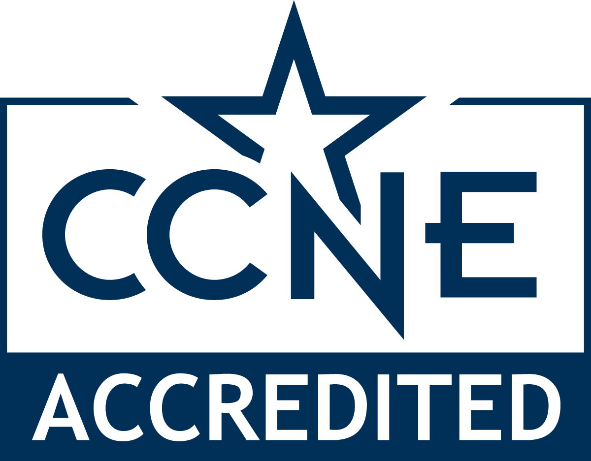

Salve Regina University’s Master of Science in Nursing program is designed for those who have graduated from an accredited program (with a minimum cumulative GPA of 3.0) and hold an RN license. Completion of the MSN-FNP program means you are set up for a successful career as an advanced practice nurse focused on family medicine.
$39,408 for nurses from partner institutions. $41,712 for nurses from non-partner institutions.
Complete our MSN-FNP program in as little as 28 months with six different start dates per year.
Preferred tuition rate for nurses at partner institutions extends to spouses and family members as well as members of the military.
*Pricing reflects cost of nursing curriculum only
Liana Wiemels · 216.337.0617 · Liana.Wiemels@salve.edu
You will earn your MSN-FNP by completing 48 credits and a minimum of 750 hours of precepted clinical work (split across four courses). A minimum of 39* credits must be taken at Salve Regina University to obtain your master’s degree. To apply, you must have an RN license that is current and in good standing, you must have maintained a GPA of 3.0, and graduated with a BSN from an accredited program. All qualified students are eligible for admission regardless of race, color, age, gender, disability, religion or national origin.
*students can only transfer a maximum of 9 credits
Founded by the Sisters of Mercy in 1934, Salve Regina University is a Catholic institution known for excellence in learning and fueling the imagination of students to bring forward progressive ideas that marry intellect and spiritual growth.
We enroll nearly 2,700 undergraduate and graduate students from across the globe. Our programs are designed to support a world that is harmonious, just and merciful by integrating student experience and personal values with competency in theory and in practice.

Salve Regina University welcomes you! Salve Regina University is accredited by the New England Commission on Higher Education. Its baccalaureate degree programs in nursing, master's degree program in nursing and Doctor of Nursing Practice program are accredited by the Commission on Collegiate Nursing Education.
Working toward your MSN-FNP highlights your leadership skills and empowers you to encourage others to embrace healthy living and social justice. Upon graduation, you will join other nursing professionals who advocate daily for the well-being of individuals, families and the communities in which they live. Ready to use your leadership, purpose and commitment to make an impact? Focus on your future and apply to Salve Regina University’s fully online MSN-FNP today.